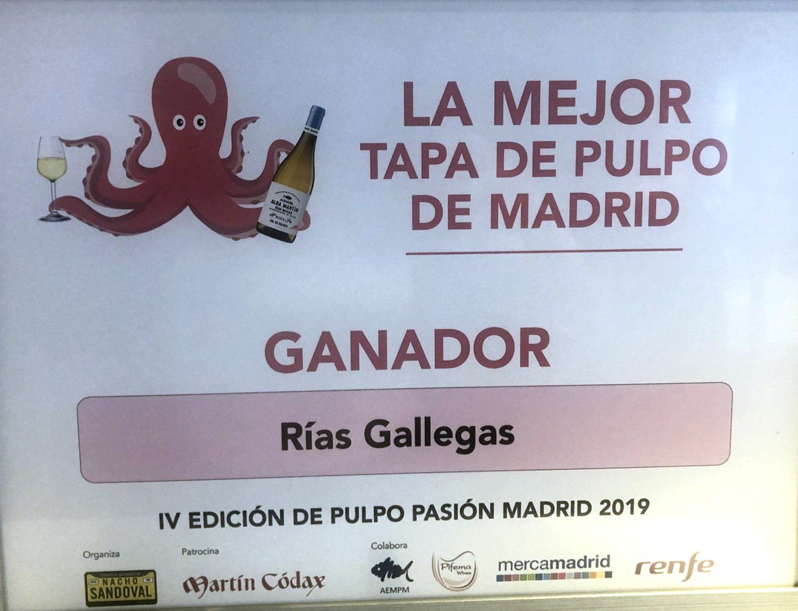
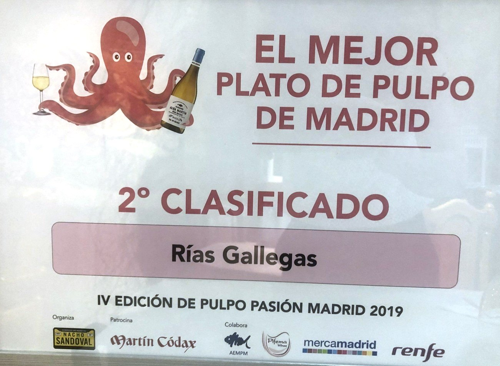
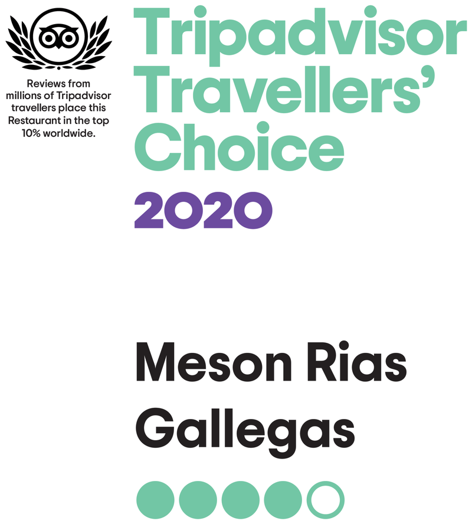
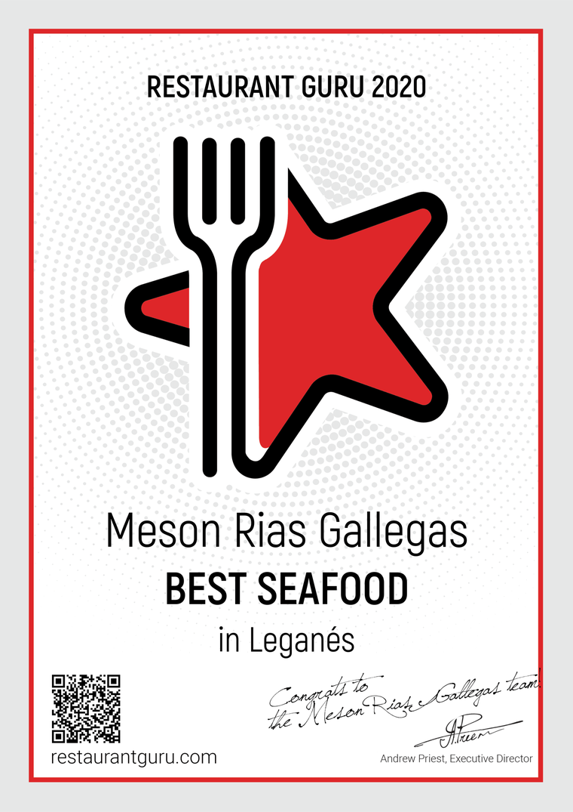
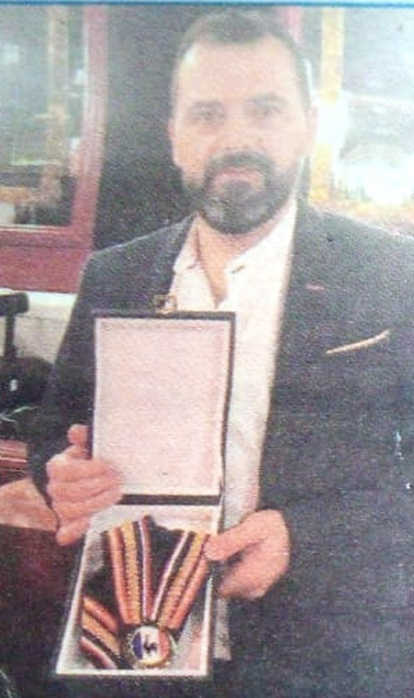

Mejor tapa de pulpo de Madrid en 2019 · Segundo mejor plato
de pulpo en 2019, 2020 y 2022
N.º 1 de 182 marisquerías de Leganés1.883 valoracionesCocina dirigida por Orlando Pérez Silva
Certamen Pulpo Pasión Madrid
Tres platos premiados
2019
Pulpo a feira, queso de tetilla y pan gallego de artesa
Mejor tapa de pulpo de Madrid
14,90 €
2019 · 20
Pulpo a la brasa ahumado
Segundo mejor plato de pulpo de Madrid, dos años seguidos
26,90 €
2022
Empanadilla de pulpo con tinta y wakame
Segundo mejor plato de pulpo de Madrid
7,10 €

Ganador · Mejor tapa de pulpo

Segundo clasificado · Mejor plato de pulpo
De la carta
Nuestro pulpo
Pulpo a feira, queso de tetilla y pan gallego de artesaMejor tapa 201914,90
Pulpo a feira25,10
Pulpo con cachelos25,90
Pulpo a la brasa ahumado2.º mejor plato 2019 y 202026,90
Pizza crujiente de pulpo a feira13,80
Empanadilla de pulpo con tinta y wakame2.º mejor plato 20227,10
También en la carta
La cocina de hoy
Zamburiñas a la brasa con kimchi y lima21,80
Tártaro y tuétanoSteak tartar sobre tuétano caramelizado a la brasa18,90
Socarrat de carabineros19,90
Tataki de atún sobre tuétano caramelizado a la brasa22,70
«El faisán del mar»Rodaballo salvaje28,50
Chuletón de ternera1.100 g aprox.64,90
Caldo gallego7,80
Reconocimientos externos
Certificados
Certificado de excelencia · Tripadvisor 2018

Travellers' Choice · Tripadvisor 2020

Best Seafood en Leganés · Restaurant Guru 2020
La casa
Desde 1981
«Nuestra cocina está dirigida por uno de los tres chefs seleccionados para
representar a Galicia en una misión institucional y gastronómica en Tokio,
donde se dio a conocer la riqueza y tradición de la cocina gallega ante el mundo»
Mesón Rías Gallegas

Orlando Pérez Silva con la Medalla de Paul Bocuse
2016Plato de Oro de Gastronomía
MadridPremio Nacional «Villa de Madrid» de GastronomíaEntregado por Radio Turismo
ParísMedalla de Paul BocuseEntregada en la biblioteca del Hôtel de Ville de París, junto a otros trece cocineros españoles
TokioMisión institucional y gastronómica de GaliciaUno de los tres chefs seleccionados